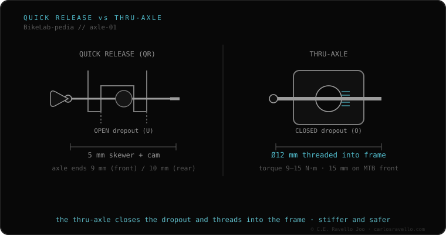

They're the two systems for securing the wheel, and they don't interchange at the frame level. Quick release (QR) uses a 5 mm skewer with a lever that clamps the hub in open dropouts: fast, light, but less rigid and the rotor can rub when you remount the wheel. The thru-axle is a 12 or 15 mm axle that threads into the frame in closed dropouts: stiffer, safer and the rotor always in place. Going from one to the other isn't a part swap: it depends on the frame's dropout type.
The question isn't «which is better», but «which your frame has»: because switching almost always means switching frame or fork.
Quick release only clamps the hub against U-shaped open dropouts; that's why it comes off in seconds but offers less rigidity and doesn't reposition the rotor precisely. The thru-axle passes through the hub and threads into O-shaped closed dropouts, mechanically locking both sides. That rigid joint is what modern disc brakes want: that's why the thru-axle took over MTB, gravel and disc road.

They don't mix: a quick-release frame won't accept a thru-axle and vice versa, because the dropouts differ. The only exception is convertible hubs that swap endcaps to move between systems, where the frame allows it. You can't drill a QR frame to convert it to thru-axle.
If you don't know which axle, width or thread your frame uses, send us the case. Real diagnosis, nothing to sell you. Message us on WhatsApp
Not by changing one part: the frame and fork must have closed threaded dropouts. In practice it's a frame/fork change.
Yes. By threading into the frame, the wheel can't eject under braking, and the rotor always returns exactly to its place.
Because machining closed dropouts and precision thru-axles costs more than stamping open quick-release dropouts.
© 2026 BikeLab Studio. Content under CC BY 4.0: you may copy, translate and publish it, even for commercial purposes. Citation is mandatory. Without attribution, the license terminates automatically (CC BY 4.0, §6.a) and the use becomes copyright infringement: we request the removal of the content and its deindexing. · Design and ownership: Carlos Ravello Joo